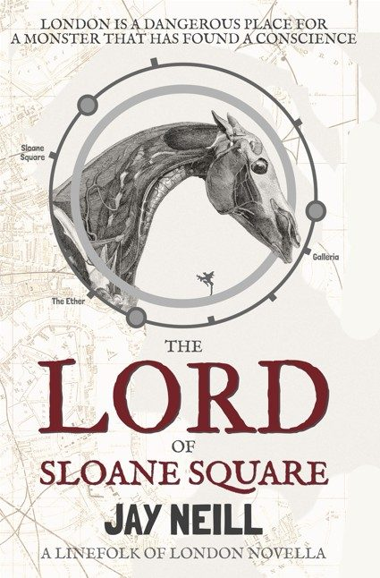
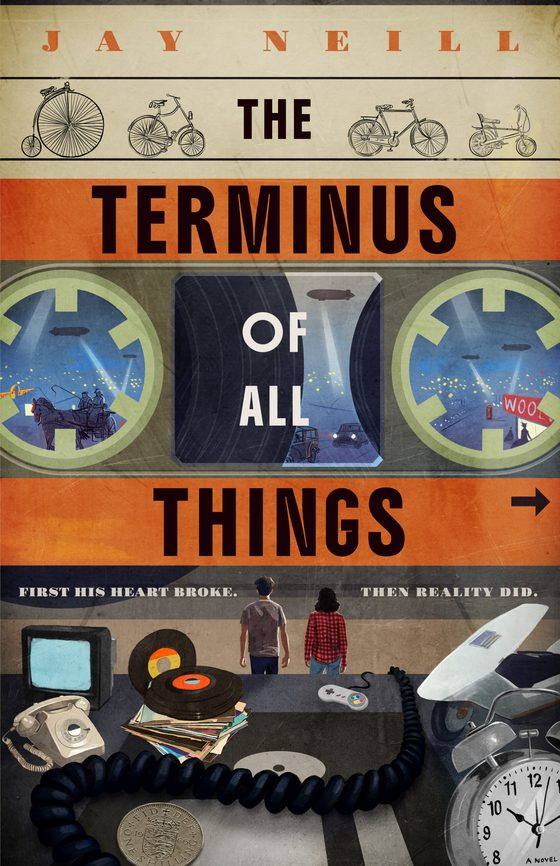

The LineFolk of London
Curious Physiologies
Hannah Chadwick is running from her past, but she just stumbled into London's most dangerous secret. Blacklisted after speaking out against corporate misconduct, she takes a job at a nondescript clinic just off Harley Street, treating patients with "rare conditions" for an eccentric abclynician named Julius Wayworthy.
Hidden throughout the city are the LineFolk: thousands of creatures, from elegant haemovores to monstrous shapeshifters, who use the Tube to hide their true forms.
Peculiar Consequences
Every action has a price. A rhythmic, spectral tapping begins to haunt Hannah, a sound no one else can hear, and draws her toward the dark history of Cockpit Steps, where LineFolk are once again being treated as sport.
Unusual Afflictions
When a young nymph collapses on the doorstep of the clynic, Hannah thinks she's dealing with a simple human infection. She's wrong. A plague spreads across the Ouroboros, and the LineFolk face two grim fates: extinction, or exposure.
The LineFolk are falling. And the cure might be deadlier than the disease.

The Lord of Sloane Square. A LineFolk of London novella. London is a dangerous place for a monster that has found a conscience.
The Terminus Of All Things. Standalone portal fantasy. First his heart broke. Then reality did. Jack Gardener, dumped in a London railway station, stumbles into Endland, a realm built from everything our world threw away.Meet Jay
- Age?
- 53... sadly... and counting
- Lives?
- Hampshire, England
- Family?
- Lots!
- Pets?
- 2 dogs, 3 cats, n chickens
- Reads?
- Portal fantasy, urban fantasy, high concept sci-fi
- Deluded?
- Almost certainly
NEXT STOP
Christmas Edition, Sunday 8 November, Sedgebrook Hall, Northamptonshire. Come and say hello, and pick up the LineFolk in paperback.